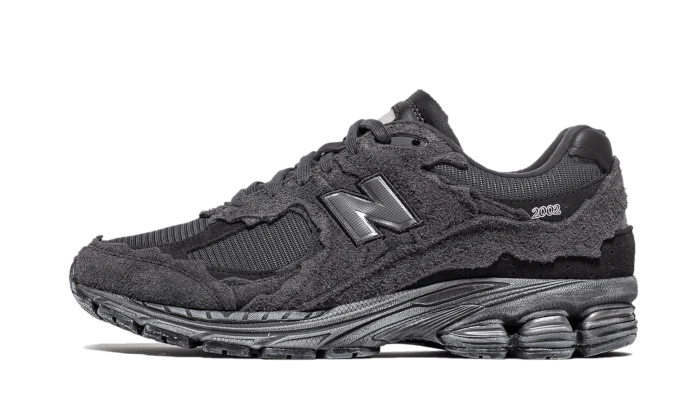

Sneakers
En el dinámico mundo de la moda urbana, las zapatillas New Balance 1906R se erigen como un testamento de innovación y estilo atemporal. Este calzado excepcional no solo es una expresión de moda, sino un hito en la convergencia entre rendimiento, diseño y herencia histórica.
Las New Balance 1906R son mucho más que unas simples zapatillas; son una oda a la calidad inigualable y a la atención meticulosa a los detalles. Cada par de estas zapatillas está elaborado con una precisión artesanal, utilizando los materiales más finos y duraderos. Los lujosos cueros y textiles seleccionados se entrelazan para formar una estructura que no solo es estéticamente agradable, sino también resistente y cómoda.
El legado de las New Balance 1906R se remonta a los orígenes de la marca en 1906. Desde entonces, New Balance ha mantenido una tradición de excelencia y autenticidad en cada par de zapatillas que produce. Las 1906R encarnan la rica historia de la marca, reflejando la evolución de la moda deportiva a lo largo de los años.
Al calzar unas New Balance 1906R, no solo te sumerges en un calzado de alta calidad, sino que también llevas contigo un pedazo de historia. El distintivo logotipo de la marca, con la "N" icónica, es un símbolo de autenticidad y estilo clásico. Estas zapatillas son una expresión de la esencia misma de New Balance: la fusión armoniosa entre la funcionalidad y la moda.
Con cada paso, las New Balance 1906R te llevan más allá de las expectativas convencionales. Su diseño elegante y contemporáneo las convierte en una opción versátil, adecuada tanto para tus aventuras diarias como para tus momentos más destacados. Ya sea explorando la ciudad o destacando en la calle, estas zapatillas son un acompañamiento perfecto para aquellos que buscan un estilo inconfundible.
Descubre el confort excepcional, la durabilidad incomparable y el estilo atemporal que solo las New Balance 1906R pueden ofrecer. Estas zapatillas son mucho más que moda; son una declaración de tu compromiso con la calidad y la autenticidad en cada paso que das. En cada detalle, las New Balance 1906R son una obra maestra de la moda urbana que perdura en el tiempo.
